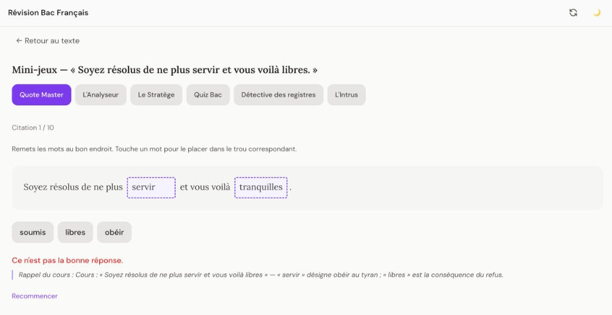
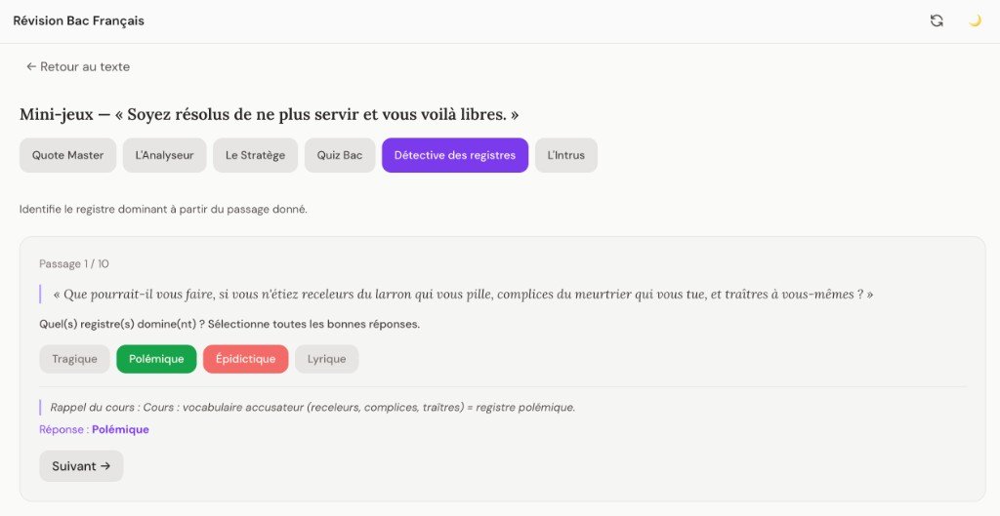
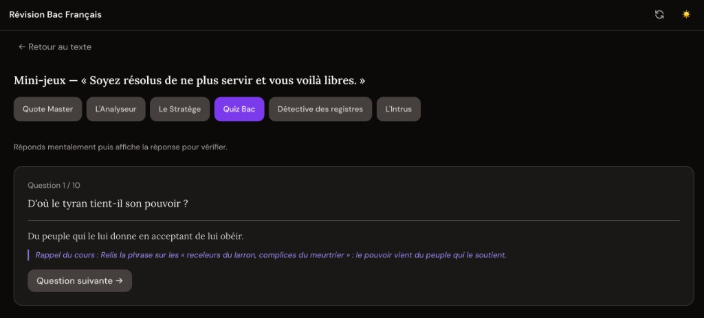
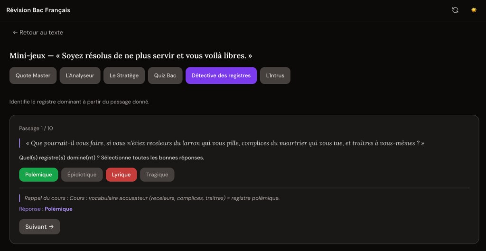

Révision Bac Français – Plateforme de mini‑jeux

Application web que j’ai créée pour mon petit frère afin qu’il révise le Bac Français autrement que par le par‑cœur : sélection de textes, suivi de progression, lecture guidée et mini‑jeux interactifs autour des œuvres du programme.
Accueil & choix des textes
L’écran d’accueil présente l’ensemble des textes du programme, regroupés par objet d’étude. On peut filtrer par type (littérature d’idées, roman, etc.), voir rapidement où on en est dans ses révisions, et réinitialiser sa progression si on souhaite tout reprendre depuis le début. L’idée est que mon petit frère puisse attaquer n’importe quel texte en quelques clics, sans se perdre.
Lecture interactive du texte

En ouvrant un texte, il arrive sur une page de lecture pleine largeur. Les mots difficiles sont soulignés : un clic affiche immédiatement une définition ou une explication en bas de l’écran. Cela lui permet de se concentrer sur le sens sans quitter la page ni aller chercher un dictionnaire à côté.
Mini‑jeux autour du texte

Premier type de mini‑jeu : les citations à trous. On doit remettre les bons mots au bon endroit, ce qui oblige à mémoriser les formules exactes et la logique de la phrase. Les feedbacks rappellent le cours pour qu’il comprenne ses erreurs, pas seulement la bonne réponse.

Deuxième type : des quiz rapides sur le texte, l’auteur, la thèse défendue, ou les passages clés. Ici, le but est de vérifier la compréhension globale et de revoir les notions sans forcément relire tout le texte.

Enfin, un mini‑jeu de type “détective des registres” lui demande d’identifier les registres dominants (polemique, lyrique, tragique, etc.) à partir d’extraits précis. Une correction détaillée lui rappelle le vocabulaire et les indices qui permettent de reconnaître chaque registre.
Chaque activité cible une compétence différente : mémorisation, compréhension, analyse stylistique. On alterne en permanence entre lecture, interaction et auto‑évaluation pour rendre les révisions moins passives et beaucoup plus engageantes.
Stack technique & IA utilisées
J’ai utilisé Cursor pour prototyper rapidement les composants React et la structure des pages, et Gemini pour m’aider à générer des séries de questions cohérentes à partir de nombreux textes retranscrits et photographiés. Le tout reste entièrement relu et adapté manuellement pour coller aux attentes du Bac.